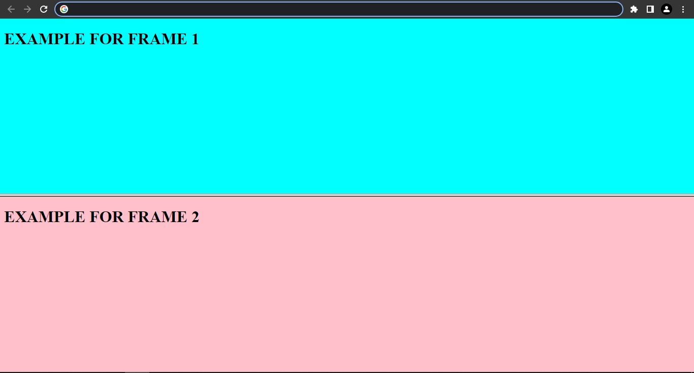

FRAME
- Frames divide a browser window into two or more separate pieces or panes, with each pane containing a separate web page.
- One of the key advantages that frames offer is that you can load and reload single panes without having to reload the entire contents of the browser window
- A frameset divides the window into rows and columns (rather like a table). The simplest of framesets might just divide the screen into two rows, whereas a complex frameset could use several rows and columns.
FRAME SET
- The < frameset > element replaces the < body > element in frameset documents. It is the attributes of the
< frameset > element that specify how the browser window will be divided up into rows and columns. These attributes are as follows
- rows specifies how many rows are in the frameset.
- cols specifies how many columns are in the frameset.
- The cols attribute specifies both the number of columns in the frameset and the width of each column
- The rows attribute works just like the cols attribute and can take the same values, but it is used to specify the rows in the frameset
- The border attribute specifies the width of the border of each frame in pixels.
- The < frame > element indicates what goes in each frame of the frameset. It is always an empty element,
- The name attribute allows you to give a name to a frame.
- The frameborder attribute specifies whether or not the borders of that frame
EXAMPLE FOR FRAMESET AND FRAME
< !DOCTYPE html>
< html>
< frameset rows="50%,50%">
< f rame name="1" src="eg1.html">< / frame>
< f rame name="2" src="eg2.html">< / frame>
< /frameset>
< /html>
OUTPUT OF THE ABOVE PROGRAM IS:
